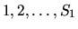

| Defragment |
You are taking part in the development of a ``New Generation'' operating system and the NG file system. In this file system all disk space is divided into N clusters of the equal sizes, numbered by integers from 1 to N. Each file occupies one or more clusters in arbitrary areas of the disk. All clusters that are not occupied by files are considered to be free. A file can be read from the disk in the fastest way, if all its clusters are situated in the successive disk clusters in the natural order.
Rotation of the disk with constant speed implies that various amounts of time are needed
for accessing its clusters. Therefore,
reading of clusters located near the beginning of the disk performs faster than reading of
the ones located near its ending. Thus,
all files are numbered beforehand by integers from 1 to K in the order of
descending frequency of access. Under the optimal
placing of the files on the disk the file number 1 will occupy clusters
,
the file number 2 will occupy clusters
and so on (here Si is the number of clusters which the
i-th file occupies).
In order to place the files on the disk in the optimal way cluster-moving operations are executed. One cluster-moving operation
includes reading of one occupied cluster from the disk to the memory and writing its contents to some free cluster. After that
the first of them is declared free, and the second one is declared occupied.
Your goal is to place the files on the disk in the optimal way by executing the minimal possible number of cluster-moving
operations.
All cluster numbers in the input file are different and there is always at
least one free cluster on the disk.
The number of cluster-moving
operations executed should be as small as possible. If the files on the disk
are already placed in the optimal way the output should contain only the
string ``No optimization needed".
Print a blank line between datasets.
1 20 3 4 2 3 11 12 1 7 3 18 5 10
2 1 3 2 11 3 12 4 18 6 10 8 5 20 7 5 20 7